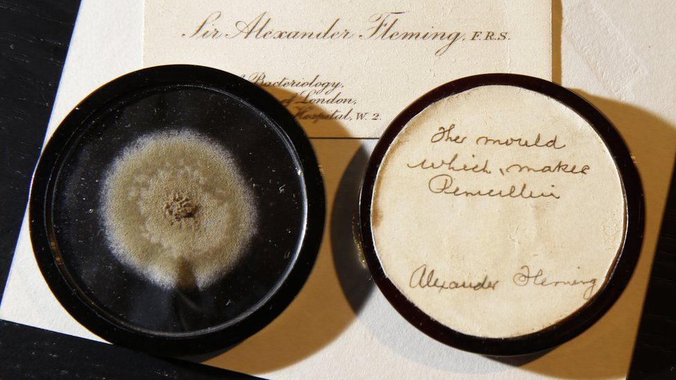
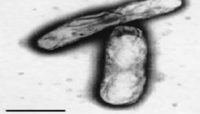

Curiosidades
Peste Negra
1-Nada de tomar banho ! Pode não fazer sentido hoje, porque agora sabemos que a peste negra tem origem bacteriana. Mas, é preciso considerar que na idade média as noções de higiene eram outras.

Isso porque a população acreditava que a doença era transmitida através do ar, algo que constava na antiga, e hoje inutilizada, teoria miasmática. Na época, os médicos acreditavam que se você entrasse em contato com um miasma (odor transmissor da doença), você poderia ser infectado.
Um dos modos de ficar doente seria o banho, pois ele abriria os poros da pele para o ar contaminado. Então, através dessa lógica, uma boa camada de podridão, sujeira e poeira na pele era visto como algo excelente.
Nem trocar de roupa era aconselhável, então as pessoas tinham que utilizar perfumes artesanais para que não fedessem tanto. Claro: aquelas medidas só pioraram as coisas, pois a falta de higiene era ótimo para os germes se espalharem, além de que atraía os roedores cujas pulgas estavam ligadas à peste
2- Médicos usavam urina e estrume como remédios
Muitas lendas estavam ligadas à Peste Negra e os profissionais da saúde e curandeiros se viam perdidos, tentando investigar de onde vinha aquele mal. Alguns deles até acreditavam que cheiros ruins podiam afugentar a praga.
Logo, muitos tratamentos consistiam em envolver o indivíduo em urina e em fezes de animais. Enquanto que a água podia abrir os poros, dizia a lenda que tomar banho com um copo ou dois de urina poderia proteger alguém da peste. O desespero certamente fazia as pessoas tentarem de tudo
3- Foi difícil o acúmulo de corpos, mas a morte mudou o modelo de servidão
Um surto de peste negra que afetou Londres na era medieval, de 1348 a 1350, dificultou o enterro de muitos corpos. Eles simplesmente não cabiam nos cemitérios disponíveis na cidade.
Segundo o livro History Of London, de 1756, de William Maitland, o Bispo de Londres teve que comprar uma propriedade conhecida como “a terra de nenhum homem”, especialmente para enterrar as vítimas.
Mas, logo o novo terreno lotou. Um dono de terras teve então que comprar uma outra propriedade de pouco mais que 50 mil metros quadrados para enterrar ainda mais vítimas.
A situação foi bem feia, mas em seu livro In The Wake Of Plague, o autor Norman Cantor diz que, por outro lado, a Peste Negra melhorou a vida dos plebeus no século 15, pois os proprietários de terras mais empreendedores ficaram mais dispostos a atender as demandas dos serviçais.”Devido à menor taxa de nascimentos, os plebleus podiam pedir mais salários e depois uma eliminação das restrições e tarefas da servidão”, afirmou o escritor.
4- Orgias entre os mortos
A Peste Negra era considerada um castigo de Deus, que teria origem não apenas nos miasmas, mas também no mundo espiritual. As crenças também que a tragédia estaria sendo causada por bruxaria foi vitalizada. Houve pânico.

Acreditando que o fim do mundo estava próximo, algumas pessoas jogaram tudo para o ar e investiram em atitudes pecaminosas — entre elas bacanais e orgias. O objetivo era investir e celebrar a vida antes que ela acabasse.
Mas a vida carnal muitas vezes trombava com a morte e as duas se misturavam. Orgias ocorriam em cemitérios, como nas lápides do Champfer, em Avignon, na França. Por lá, as atividades sexuais grupais se estabeleceram e continuaram até o fim do século 14, forçando a Igreja a proibir a prática.
TIFO

No início de novembro de 1944, Anne é transportada novamente. Juntamente com a sua irmã, foi deportada para o campo de concentração de Bergen-Belsen.
Os seus pais ficam em Auschwitz. As condições em Bergen-Belsen são também miseráveis: quase não há comida, está frio, e Anne, como a sua irmã, fica com febre tifóide. Em fevereiro de 1945, ambas morrem das consequências dessa doença, primeiro Margot e pouco depois Anne.
Gripe Espanhola
1- A gripe espanhola não começou na Espanha.
A pandemia que ficou conhecida em todo o mundo como “gripe espanhola”, não teve origem na Espanha. Os primeiros casos foram oficialmente registrados em março de 1918 em Camp Funston, uma base militar no Kansas. Em seis semanas, a doença atingiu as trincheiras da frente ocidental na França, e só em maio a gripe eclodiu na Espanha.

Mas ao contrário dos Estados Unidos e da França que estavam muito envolvidos com a Primeira Guerra Mundial, a Espanha era neutra e por isso não censurou sua imprensa. Esta focou em cobrir as mortes de milhares de pessoas no mundo causadas pela doença.
A pandemia então ficou conhecida como “gripe espanhola” devido ao destaque que a imprensa da Espanha deu para ela.
2- Acreditavam que o causador era uma bactéria, e não um vírus.

Em 28 de setembro de 1918, um jornal espanhol deu uma pequena explicação sobre o que estaria causando tantas mortes no país, porém, informando que o motivo seria uma bactéria.
E não foi apenas um jornal espanhol que identificou erroneamente o agente causador da doença. A ideia de que a gripe fosse causada por um bacilo, ou bactéria, foi aceita pelos cientistas mais eminentes da época, que se encontravam desamparados diante da situação.
3- O vírus e outras epidemias.
O vírus da gripe espanhola é uma estripe já extinta do subtipo do vírus da gripe Influenza A H1N1.

O H1N1 é o maior responsável pela gripe comum em todo mundo, e suas diversas mutações já causaram uma série de epidemias além da gripe espanhola. Uma das mais famosas foi a gripe suína de 2009.
4- A gripe espanhola matou mais homens que a Primeira Guerra Mundial

Na 1ª Grande Guerra Mundial, mais de 9 milhões de pessoas morreram durante os quatro anos de batalha. Por outro lado, estima-se que entre o primeiro caso registrado em março de 1918 e o último em março de 1920, cerca de 50 milhões de pessoas morreram pela gripe espanhol, embora alguns especialistas sugiram que o total possa ter sido o dobro desse número
5- Os métodos caseiros de combate à gripe.

Em meio à pandemia, muitos métodos caseiros de combate à gripe começaram a ser divulgados nos jornais, mesmo não tendo nenhuma comprovação científica de sua eficácia.
As pessoas recomendavam queimar alfazema, acender incensos e até fumar para tratar a gripe.
CURIOSIDADES GERAIS
1- Centros urbanos cada vez mais populosos facilitam a disseminação dos microrganismos. Com a expansão, o ser humano invadiu o habitat natural de outros animais, passou a criá-los em grande escala, entrando em contato com secreções desses animais.
Os vírus que infectam o gado causando a peste bovina, por exemplo, mudaram no ser humano para o sarampo.
2- Antes do surgimento dos antibióticos, simples infecções bacterianas causavam a morte de milhares de pessoas. Somente em 1928 que o cientista Alexander Fleming descobriu, por engano, a penicilina, um antibiótico utilizado no tratamento de doenças bacterianas até hoje.

3- No século 15, Veneza, na Itália, foi a primeira cidade a colocar em prática medidas de contenção de doenças, como o fechamento de fronteiras e quarentenas.
4- Entre o século 19 e 20, tuberculose e vários deixaram mais de 1 bilhão de mortos. O conceito de pandemia ganhou força com a gripe espanhola, quase 100 anos atrás.
5- Os casos de HIV explodiram entre os anos 1980 e 1990. Foi inclusive a causa da morte de muitos artistas da época, dentro deles Freddie Mercury.

6- Hoje, existem aproximadamente 100 tipos de vírus que contaminam humanos, frente a pelo menos 50 espécies de bactérias capazes de transmitir doenças.
7- Em meados do século 19, o bacilo de Koch, começou a infectar a população no mundo inteiro. Causadora da tuberculose, a bactéria matou em 100 anos cerca de 1 bilhão de pessoas.
